Your ride had the numbers. Now your video does too.
Overlayer burns your real ride data into your videos, right on your phone: 15 live readouts, from speed and altitude to heart rate, power, cadence and G-force. Footage from any camera works: the DJI Osmo Action series, Insta360, GoPro, drones and phones. No computer and no account, and nothing is uploaded.
That's just a taste. Every style comes in 4 colourways, and in Custom mode you build your own layout from 19 gauges.
- HUD
- Analog
- Neon
- Widgets
- Alpine
- LCD
Inside the app
See it, tweak it, export it
Scrub through your video with the overlay live on top, flip to vertical for Reels and TikTok, and export at the quality you filmed in. These are real screens, from a ski day filmed on a DJI Osmo Action.
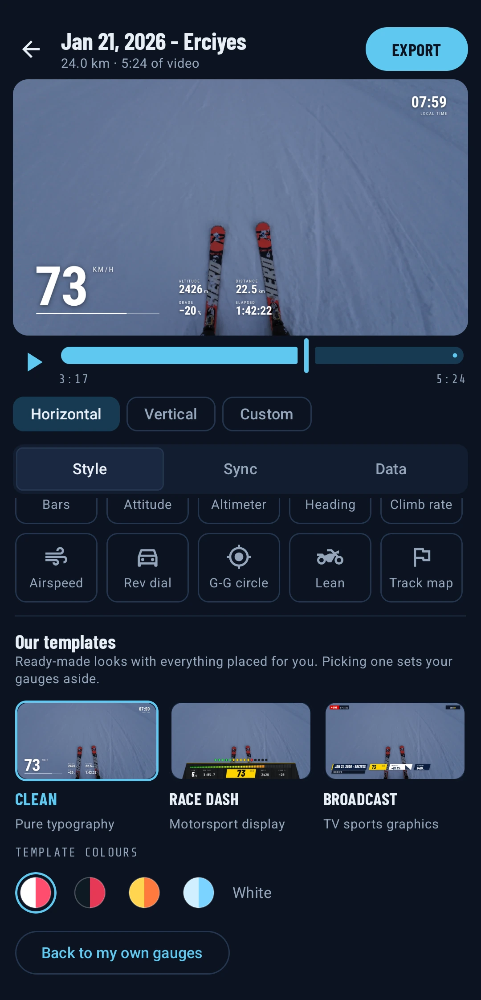
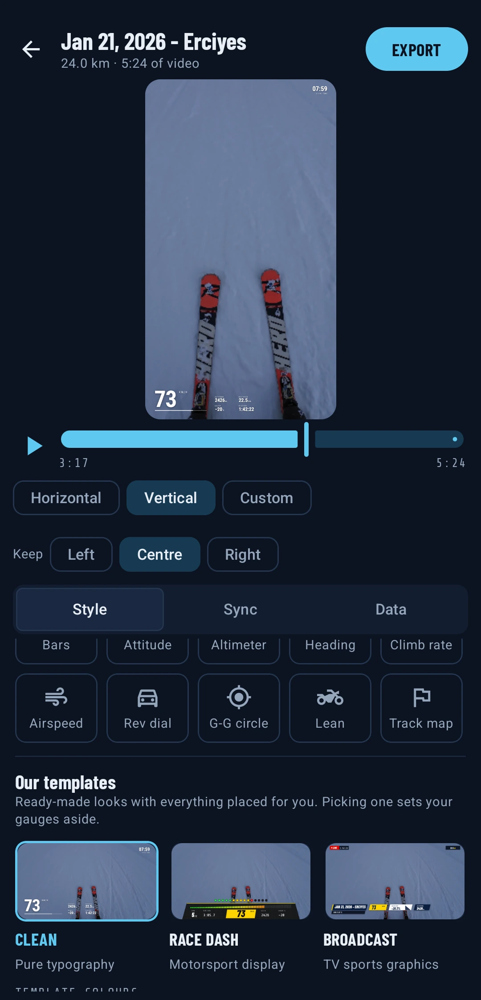
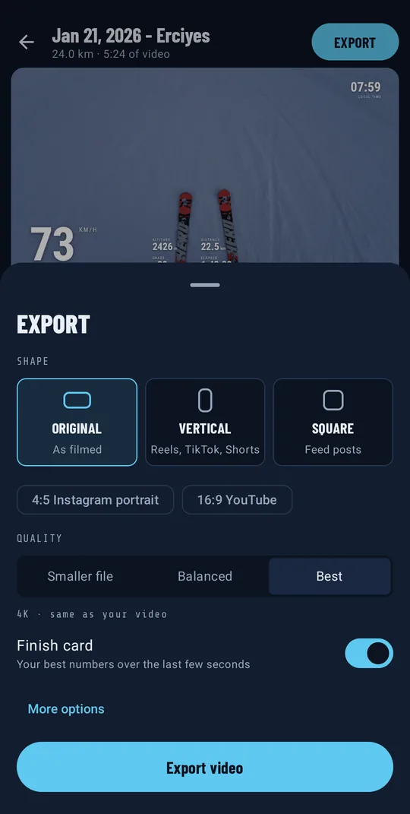
Gauges
Build your own dashboard
Prefer to pick every piece yourself? Place gauges anywhere on the video. Modern gauges come in 12 looks with 3 colours each, and classic instruments in 5 finishes: black, white, vintage, carbon and titanium. Every picture below was drawn by the app.
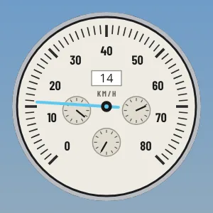
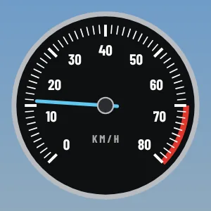
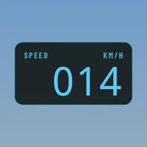
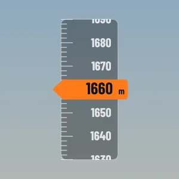
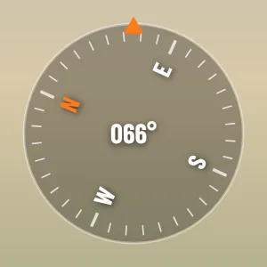
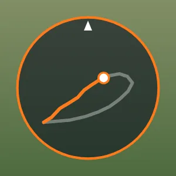
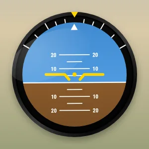
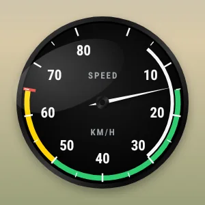
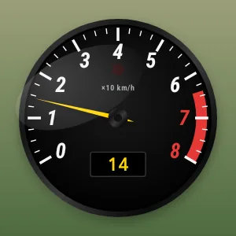
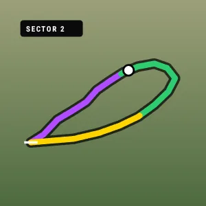
Supported files
Film on anything. Add your data.
Video in MP4 or MOV from any camera: the DJI Osmo Action series (Action 5 Pro, Action 4 and earlier), Insta360, GoPro, a drone or your phone. Pair it with one of these data files.
Any sports app
Export from Strava, Komoot, Garmin Connect or almost any tracking app or watch.
- ROUTE
- ELEVATION
- TIME
- HEART RATE
Watches & bike computers
Straight from Garmin, Wahoo, Coros and Zwift, with everything your sensors recorded.
- HEART RATE
- POWER
- CADENCE
- TEMP
DJI drones
The flight log your drone saves next to each video, already timed to the footage.
- HEIGHT
- SPEED
- POSITION
Cameras with built-in GPS
GoPro clips carry their own GPS and motion data, so no extra file is needed. Split recordings are joined back together.
- GPS
- G-FORCE
- JUMPS
Filming on a DJI Osmo Action?
Here's the whole thing, start to finish
Works with every DJI Osmo Action camera, including the Action 5 Pro and Action 4. Your watch or phone records the ride data, the camera records the video, and Overlayer puts them together.
Record the ride
Start your watch, bike computer or an app like Strava when you set off, and film on your Osmo Action as usual.
Get the clip onto your phone
Download it from the camera with the DJI Mimo app, or copy it off the memory card. Connecting to Mimo also keeps the camera's clock right, which helps everything line up.
Get the ride file
Export the ride as a GPX or FIT file from Strava, Garmin Connect, Komoot or your watch's app, and save it to your phone.
Open both in Overlayer
Add the ride file and the clip. Overlayer matches them by the time each was recorded, so your speed shows at exactly the right moment. Pick a style and export.
Using the DJI GPS Bluetooth Remote? Reading its data straight from the clip is on the way. For now, use the ride file from your watch or phone as above.
What goes on your video
3 styles. 19 gauges. 15 readouts.
Choose from 3 complete styles in 4 colourways each, or build your own from 19 gauges: dials, big numbers, bars, route map, altitude chart, compass, heart-rate zones, and classic aviation and motorsport instruments.
3840 × 2160 · 60 FPS
Quality that matches your camera
Exports at your video's own resolution and frame rate, so 4K60 stays 4K60. HEVC or H.264, up to a "keep everything" quality setting.
9 : 16
Made for Reels, TikTok and Shorts
Reframe to vertical or square and the overlay re-lays itself out to fit. Share straight to your apps when it's done.
AIRTIME · HEIGHT · SPIN
Jump detection
A camera's motion sensors know when you left the ground. Overlayer finds each jump and shows it as it happens. Works with GoPro clips today.
MAP · PROFILE · COMPASS
Where you are on the route
A route map, altitude profile and compass move with you, so viewers can see where you are on the route.
MAX · AVG · TOTAL
A finish card
End the video on a summary of your best numbers: top speed, total climb, distance and average heart rate.
EXPORTS IN THE BACKGROUND
Keep using your phone
Long exports keep going while you do other things. A notification tells you when your video is ready.
How it works
Three taps from ride to post
Add your data
Pick a GPX, FIT or SRT file from your phone, or a video with built-in GPS.
Pick your video
Overlayer lines the data up with your footage using the recording time.
Choose a style and export
Preview it live, pick a style and colourway, then export and share.
Private by design
Your rides stay on your phone.
Overlayer has no internet permission, so it can't send anything anywhere. Your location history, heart rate and videos never leave your phone. There are no accounts, ads, analytics or tracking.
- NEVERThe internet
- NEVERYour location
- NEVERCamera, microphone or contacts
- ASKSNotifications, for export progress
- YOURSOnly the files and videos you pick
Pricing
Free to try. Pro when you're hooked.
The free version works fully, so you can make a video you like before paying anything.
Free
- Your first 3 exports in full Pro quality
- Every file type: GPX, FIT, SRT and built-in camera GPS
- Automatic sync to your video
- The Clean style, or one gauge of your choice
- After that, exports up to 720p, 30 fps
- Small Overlayer watermark
Pro BEST
- Everything in Free
- Full quality: 4K and up to 120 fps
- No watermark
- Every style, colourway and gauge
- Vertical and square export for social
- Automatic run detection and saved presets
Launch prices in USD; your local price is shown in the store before you buy. Subscriptions renew automatically and can be cancelled at any time in your store account. You keep Pro until the end of the period you paid for.
Questions
Good to know
Which cameras work?
Any camera that records MP4 or MOV: every DJI Osmo Action (including the Action 5 Pro and Action 4), Insta360, GoPro, drones and phones. Pair the video with a GPX or FIT file from your watch, bike computer or sports app. DJI drones and GoPro clips carry their own data, so they need no extra file. See the DJI Osmo Action walk-through.
How do I use my Strava activity?
On the Strava website, open the activity, choose the ⋯ menu and Export GPX. Open that file in Overlayer and pick your video.
When is it coming out?
Android is first and is in testing now. The iPhone version is in development. Leave your email below to hear the day each one launches, or to join the Android beta.
Which phones does it run on?
Android 8.0 or newer. Exporting in 4K needs a phone that can record 4K itself; most phones from the last few years can.
Does it need an internet connection?
Never. Everything happens on your phone, so it works on a mountain with no signal just as well as at home.
Are the numbers accurate?
They're exactly what your devices recorded, lightly smoothed to look good on video. GPS and sensors aren't perfect, so treat the overlay as a great-looking record, not an official timing or medical tool.
Be first
Want it on your phone first?
Leave your email and we'll tell you the day it launches. Android beta testers get Pro free while it's in testing.